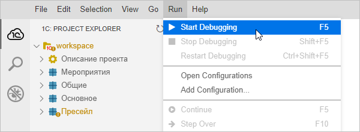
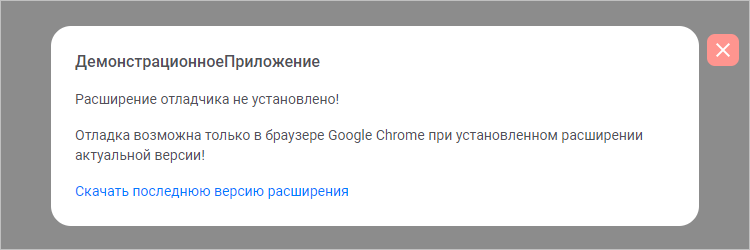
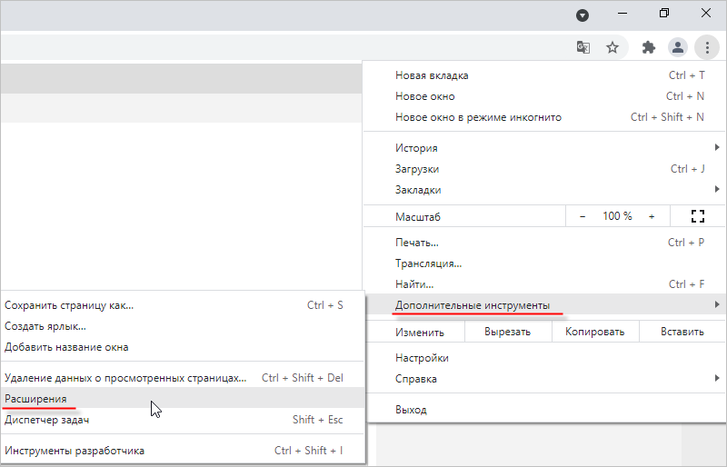
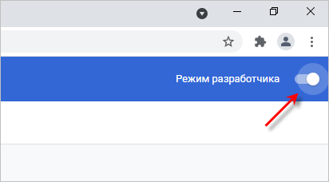
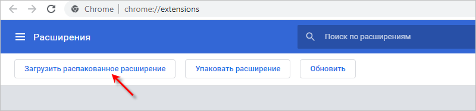
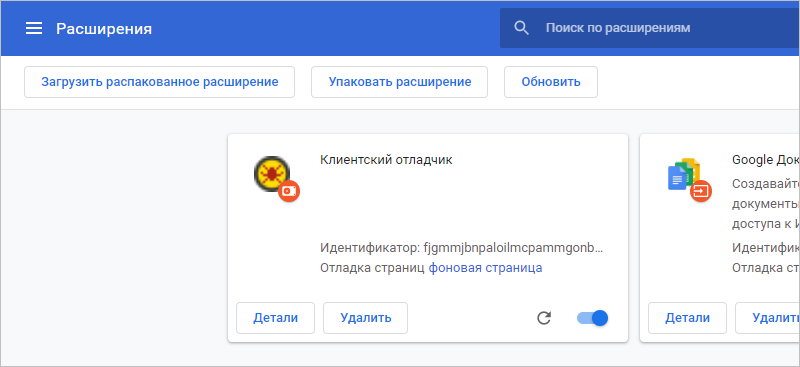

Как включить отладку на сервере
В этом примере вы включите отладку на сервере и установите расширение отладки в браузере.
Стандартно отладка на сервере выключена. Это не мешает вам открывать приложение в среде разработки, изменять его, публиковать на сервере и перезапускать, но именно отлаживать программный код на встроенном языке вы не сможете.
Чтобы включить отладку на сервере вам потребуется:
- изменить настройки сервера;
- перезапустить его;
- установить в браузере расширение отладчика.
Итак:
- Отредактируйте файл debug.yml. Атрибут enabled установите в значение
true и сохраните файл;
debug: enabled: true port: 8080 - Перезапустите сервер;
- Откройте приложение в среде разработки;
- Нажмите или F5, чтобы запустить отладку;

- «1С:Кабинет сотрудника» сообщит, что расширение отладчика не установлено и предложит его скачать;

- Скачайте расширение по ссылке и разархивируйте его в какой-нибудь каталог;Предупреждение: Этот каталог нельзя удалять или очищать даже после установки расширения в браузер.
- Откройте настройки расширений в браузере. Для примера мы используем браузер Google Chrome;

- Включите режим разработчика;

- Загрузите распакованное расширение;

- В результате у вас появится расширение Клиентский отладчик и теперь вы можете отлаживать проекты, разрабатываемые
в среде разработки;
